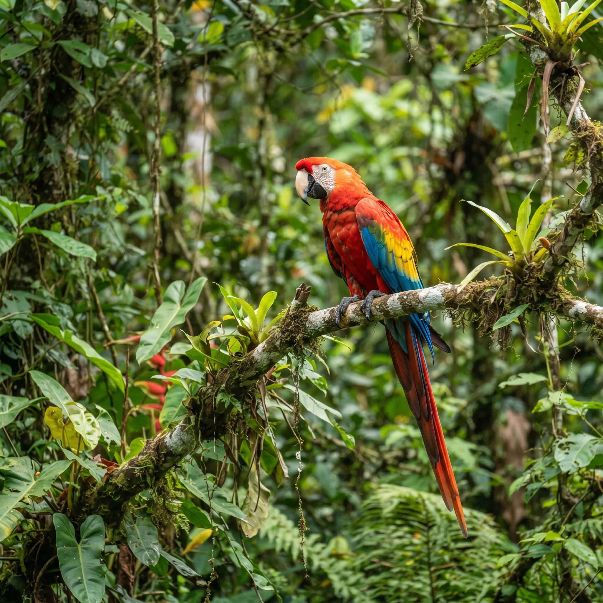

Arara ara (Arapapagáj)
Az esőerdők lombkoronaszintjének egyik leglátványosabb és leghangosabb képviselője az arapapagáj.
Tovább
Hatalmas, élénkpiros, kék és sárga tollazata, valamint tekintélyes mérete miatt azonnal magára vonja a figyelmet. Rendkívül intelligens és társasági lény, amely élethosszig tartó párkapcsolatban él, és hangos rikácsolásával betölti a dzsungel levegőjét, miközben erős csőrével kemény dióféléket és magvakat roppant össze.